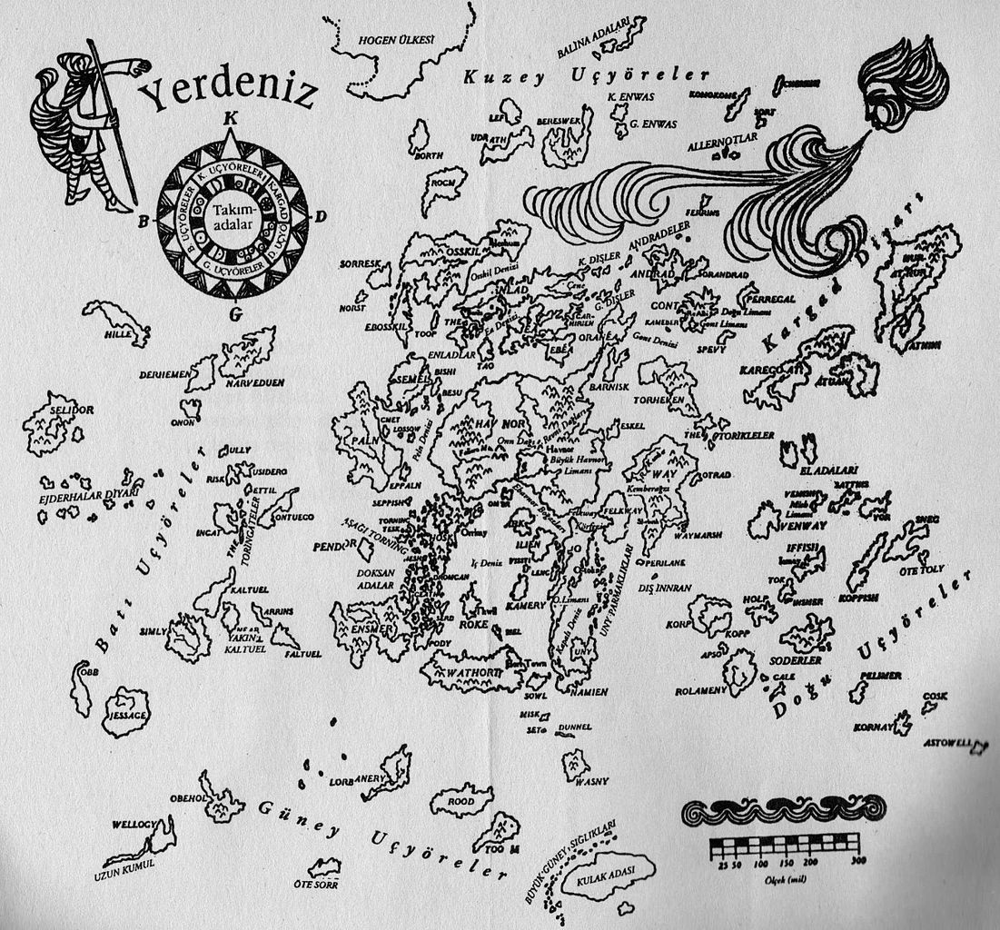

ÇEŞMELİ Avlu'da, mart güneşi dişbudak ile kara ağacın genç yaprakları arasından parlıyor; sular, gölgelerle berrak ışığın içinden sıçrayıp dökülüyordu. Çatısı olmayan bu avlunun dört yanı, yüksek taş duvarlarla çevriliydi. Bunların ardında odalar, avlular, geçitler, koridorlar, kuleler ve en son olarak da Roke'un Büyük Ev'inin, savaş, deprem tehdidine ya da denizin kendisine bile karşı koyabilecek, sadece taşla değil katıksız büyüyle örülmüş ağır dış duvarları bulunuyordu. Çünkü Roke Adası, büyü sanatının öğretilmekte olduğu Bilgeler Adası'ydı; Büyük Ev büyücülüğün merkezi ve okuluydu; Ev'in merkezi de duvarlar içindeki, çeşmenin aktığı ve ağaçların, yağmur, güneş veya yıldızların altında durduğu küçük avluydu.
Çeşmeye en yakın ağaç olan ulu bir üvez, kökleriyle yerdeki mermeri kamburlaştırmış, kırmıştı. Yeşil yosun damarları havuzun etrafındaki çimlik alandan yayılarak kırıkların içini doldurmuştu. Bir oğlan burada, çeşmenin ortasındaki fıskiyenin dökülen sularını bakışlarıyla izleyerek, alçak mermer ve yosun yükseltisinin üzerinde oturuyordu. Delikanlı sayılabilecek yaşta olmasına rağmen yine de bir çocuktu; zengin giysilerle donanmış, ince. Yüzü, altın renkli tunçtan dökülmüş gibi son derece düzgün şekilli ve sakindi.
Arkasında, belki bir dört buçuk metre gerisinde, avlunun ortasındaki çimliğin sonunda, ağaçların altında bir adam duruyordu, ya da duruyor gibi görünüyordu. O kıpırdayan gölgelerin titreşiminde ve ılık ışık altında insan emin olamıyordu. Oğlan çeşmeyi seyrederken adam da oğlanı seyrediyordu. Ağaç yapraklarının kıpırtısından; suyun kıpırtısından ve bitmeyen şarkısından başka hiçbir ses ve hareket yoktu.
Adam yaklaştı. Bir esinti üvez ağacını kımıldatarak, yeni açmış yapraklarını hareket ettirdi. Oğlan yerinden fırladı; kıvrak ve şaşkın. Dönerek onu selamladı. "Baş büyücü Hazretleri," dedi.
Kukuletalı beyaz yünlü pelerin içindeki, kısa boylu, dik ve dinç adam oğlanın önünde durdu. Arkaya doğru indirilmiş kukuletanın katları üzerinde yüzü, kızıla çalan esmer renkli, atmaca burunluydu; bir yanağı eskiden kalma yaralarla yol yol çizikti. Gözleri parlak ve vahşiydi. Yine de kibarca konuştu. "Oturmak için çok hoş bir yer bu Çeşmeli Avlu' dedi ve oğlanın Özür dilemesini erken davranıp önleyerek ekledi: "Uzun bir yolculuktan geliyorsun ve hiç dinlenmedin. Yine otur. "
Adam, havuzun beyaz kenarına oturarak elini, su parmaklan arasından geçecek şekilde, çeşmenin daha yukarıdaki çanaklarından dökülen parıltılı damlalarının çemberine doğru uzattı. Oğlan da tekrar yerdeki taşların yükseltisine oturdu; bir dakika süreyle her ikisi de konuşmadı,
"Sen Enlad ve Enlades Prensi'nin oğlusun" dedi Başbüyücü, "Morred Prensliğinin varisi. Tüm Yerdeniz'de bundan daha eski ve daha saf bir soy yoktur. Bent Enlad'ın meyve bahçelerini baharda görmüştüm, Berila'nın altın çatılarını da... Sana ne derler?"
"Bana Arren derler"
"Bu senin ülkenin dilinde bir sözcük olmalı. Ortak lisanımızda ne anlama geliyor?"
Oğlan, "Kılıç," dedi.
Başbüyücü, başını anladım dercesine salladı. Tekrar bir sessizlik oldu; oğlan küstahça değil ama utanmadan, "Başbüyücü'nün tüm lisanları bildiğini zannederdim," dedi.
Adam, bir yandan çeşmeyi seyrederken, bir yandan başını, hayır anlamında salladı.
"Ve tüm isimleri..."
"Tüm isimleri mi? Sadece ilk Sözcük'ü söylemiş ve adaları derin denizden çıkarmış olan Segoy tüm isimleri bilirmiş. Emin ol," ve parlak, kızgın bakış Arren'in yüzüne çevrildi, "eğer senin gerçek ismini öğrenmek isteseydim, öğrenirdim. Fakat buna gerek yok. Sana Arren diyeceğim; ben de Çevik Atmaca'yım, Söyle bana, buraya kadar olan yolculuğun nasıldı?" "Çok uzun."
"Rüzgâr ters mi esti?"
"Rüzgâr ılımlıydı ama taşıdığım haber ters, Çevik Atmaca Hazretleri."
"Söyle öyleyse," dedi Başbüyücü ciddiyetle, ama neredeyse bir çocuk kadar sabırsızca; Arren konuşurken de tekrar, sanki onu dinlemiyormuş gibi, bir üst çanaktan alt çanağa dökülen su damlacıklarının kristal perdesine baktı ama oğlanın sözlerinden de fazlasını dinliyormuş gibiydi.
"Bildiğiniz gibi efendim, babam prens hazretleri, Morred'in soyundan geldiğinden ve gençliğinde burada, Roke'ta bir yıl geçirmiş olduğundan, büyücülükten anlayan birisidir. Ülkesinin yönetimi ve idaresiyle, şehirlerin çekilip çevrilmesiyle ve ticaret sorunlarıyla ilgilenmekten sanatını pek sık kullanmadığı halde biraz gücü ve bilgisi vardır.
Adamızın ticaret filosu hep batıya doğru açılır, hatta Batı Uçyöresi'ne bile gidip, safir, öküz derisi ve teneke ticareti yaparlar; bu kış başlarında kaptanlardan biri Berila şehrimize, babamın kulağına kadar gelen bir hikâye ile döndü. Öyle ki babam adamı çağırtarak, söylenenleri kendi kulaklarıyla dinledi." Çocuk kendinden emin, çabuk çabuk konuşuyordu. Uygar saray insanları tarafından eğitilmişti ve gençlerde görülen sıkılganlıktan eser yoktu onda. "Kaptan, deniz yoluyla bizden beş yüz mil kadar batıda bulunan Narveduen adasında artık büyü kalmadığını söyledi. Burada sihrin hiç etkisi kalmadığım ve büyü sözlerinin unutulduğunu anlattı. Babam bunun, tüm sihirbaz ve cadıların adayı terk etmiş olmalarından mı kaynaklandığını sorunca adam, hayır, diye cevapladı: Orada, bir zamanlar sihirbaz olan bazı insanların olduğunu fakat artık çaydanlıkları tamir için veya kaybolan bir iğneyi bulmak için bile büyü yapamadıklarını söyledi. Ve babam sordu, Narveduen halkı dehşete düşmemiş mi? Kaptan yine, hayır, dedi, umursamaz görünüyorlarmış. Ve gerçekten de, dedi, insanlar arasında hastalık vardı, güz haşatı azdı; yine de umursamaz görünüyorlardı. Dedi ki adam prensle konuşurken ben de oradaydımdedi ki, 'Hasta adamlara benziyorlardı; bir yıl içinde öleceği söylenen hasta bir adama, kendi kendine bunun doğru olmadığını ve sonsuza kadar yaşayacağım söyleyen bir adama. Dünyaya,' dedi, 'bakmadan yaşamlarına devam ediyorlardı' Diğer tacirler geri döndüğünde onlar da Narveduen'in fakir bir ülke olduğunu ve büyücülük sanatını yitirdiğini tekrarladılar. Fakat bunların hepsi, zaten hep garip olan Uçyöreler'le ilgili masallardı sadece; bir tek babam bu konu üzerinde çok düşündü.
"Sonra Yeni Yılda, Enlad'da kutladığımız Kuzular Bayramında, çobanların kanlan şehre sunilerinin ilk yavrularını getirdiklerinde, babam büyücü Köke, kuzulara bereket tılsımı okumasını söyledi. Fakat Kök sıkıntılı sıkıntılı oturduğumuz salona gelerek asasını yere bıraktı ve 'Tılsımı söyleyemiyorum efendim' dedi. Babam onu sorguya çekti fakat adam sadece, 'Sözleri ve şekillemeyi unuttum,' diyebiliyordu. Böylece babam pazar yerine giderek tılsımları kendisi okudu ve bayram sona erdi. Fakat, ben o gece onun saraya geldiğini, ümitsiz ve yorgun göründüğünü gördüm; bana 'Sözleri söyledim ama bir anlam ifade edip etmediklerini bilmiyorum,' dedi. Ve gerçekten de bu bahar, sürüler arasında sorunlara rastlanıyor, koyunlar doğum sırasında ölüyor, kuzular ölü doğuyor, bazıları da... hilkat garibesi." Oğlanın sakin ve canlı sesi kısıldı; bu son sözcükleri çekinerek söyledi ve yutkundu. "Bazılarını gördüm," dedi. Bir sessizlik oldu.
"Babam, bu meselenin ve Narveduen hikâyesinin, dünyanın bizim bulunduğumuz tarafında kötü bir şeylerin olduğunun işareti olduğuna inanıyor.
Bilgelerin öğütlerini rica ediyor,"
"Seni yollamış olması da bu ricasının acil olduğunu gösteriyor," dedi Başbüyücü. "Sen onun tek oğlusun ve Enlad'dan Roke'a yolculukda kısa değildir. Daha başka şeyler de var mı?"
"Sadece dağlardan birkaç kocakarı hikâyesi."
"Kocakarılar ne diyor?"
"Cadıların dumanda ve suda baktıkları fallar hep kötüye alametmiş ve yaptıkları aşk iksirleri de kusurluymuş. Ama bunlar gerçek büyücülüğe vakıf insanlar değil."
"Fal bakmak ve aşk iksiri hazırlamak pek önemli değildir ama yaşlı kadınların sözlerine kulak asmak gerekir. Evet, senin getirdiğin haber elbette Roke'lu Ustalar tarafından tartışılacaktır. Ama bana ne gibi bir öğüt vereceklerini bilemiyorum Arren. Çünkü, bu tür haberlerin geldiği ilk ada Enlad değil."
Arren'in, kuzeyden başlayıp, büyük Havnor adasının yanından ve İç Deniz'i bir baştan bir başa geçerek Roke'a kadar yapmış olduğu bu yolculuk onun ilk seyahatiydi. Sadece bu son birkaç hafta içinde, kendi ülkelerine ait olmayan adaları görmüş, uzaklık ve çeşitliliğin farkına varmış ve Enlad'ın güzel dağlarının gerisinde büyük bir dünyanın var olduğunu, orada bir sürü insanın yaşadığını anlamıştı. Henüz engin bir düşünce yapışma sahip değildi; o yüzden Başbüyücü'nün ne demek istediğini anlaması biraz zamanını aldı. "Başka nerede?" diye sordu o zaman, biraz ümitsizce. Çünkü Enlad'a, evine hemen bir çare götürmek istiyordu.
"Önce Güney Uçyöre'de. Daha sonraları, Adalar Diyarı'nın güneyinde, Wathort'ta bile. İnsanlar, artık Wathon'ta büyü yapılmadığını söylüyorlar. Kolay kolay emin olamayız tabii, O ülke uzun zamandan beri asi ve korsanlıkla dolu bir yerdi; ve derler ki ha bir Güneyli tüccarı dinlemişsin ha bir yalancıyı. Ama yine de hikâye hep aynı: Büyücülük kaynakları kurudu.""Ama burada Roke'ta—"
"Burada, Roke'ta, biz bunların hiçbirini hissetmedik. Biz burada fırtınadan, değişimden ve kötü kaderden korunuyoruz. Belki de çok fazla korunuyoruz. Şimdi ne yapacaksın Prens?"
'Bu kötülük ve bu kötülüğün çaresi hakkında babama götürecek kesin bir açıklama bulunca, Enlad'a geri döneceğim'
Bir kez daha Başbüyücü çocuğa baktı ve bu kez, tüm terbiyesine rağmen Arren bakışlarını çevirdi. Bunu neden yaptığım bilmiyordu çünkü o kara gözlerde kötü bir şey yoktu. Tarafsız, sakin ve sevecendiler.
Enlad'da herkes babasına güveniyordu ve o da babasının oğluydu. Kimse ona böyle, Hâkim Prensin oğlu, Enlad Prensi Arren olarak değil de sadece Arren olarak bakmamıştı. Başbüyücü'nün bakışlarından korktuğunu düşünmek istemiyordu ama o bakışlara karşılık da veremiyordu. Bu bakış oğlanın etrafındaki dünyayı yine genişletiyor gibiydi, ve şimdi, sadece Enlad
Önemsiz bir konuma düşmekle kalmıyor, kendisi de Başbüyücü'nün gözünde, küçük bir şekil oluyordu; üzerine karanlık çökmüş denizle şanlı adaların engin sahnesinde küçücük bir şekil.
Oturup mermer kaldırım taşlarının kırıkları arasından çıkan parlak yosunları yolmaya başladı ve hemen ardından, son iki yıl içinde derinleşmiş olan sesinin ince ve boğuk çıktığını fark ederek "Ve bana ne emrederseniz onu yapacağım," dedi.
"Sen babana karşı sorumlusun, bana değil' dedi Başbüyücü.
Gözleri hâlâ Arren'in üzerindeydi ve oğlan başını kaldırıp baktı, itaat ettiği anda kendini unutmuştu, işte o zaman Başbüyücü'yü gördü: Tüm Yerdeniz'in en büyük büyücüsü; Fundaur'un Kara Kuyusu'nu örten, Atuan Mezarlarından ErrethAkbe'nin halkasını getiren ve Nepp'in derin temelli denizden duvarını ören adam; Astowellden Selidor'a kadar bütün denizleri bilen denizci; yaşayan tek Ejderhalar efendisi. Orada, çeşmenin yanında diz çökmüştü, kısa boylu bir adam, üstelik genç de değil; bir akşam kadar derin gözleri olan sakin sesli bir adam.
Arren alelacele, oturduğu yerden toparlanıp usulen iki dizinin üzerine çöktü. "Efendim' dedi kekeleyerek, "izin verin size hizmet edeyim!"
Kendine güveni kaybolmuş, yüzü kızarmıştı ve sesi titriyordu.
Kalçasında, kırmızı ve altınla bezenmiş taze deriden bir kının içinde bir kılıç taşıyordu; fakat gümüşlü tunçtan haç şeklindeki kabzası aşınmış olan kılıcın kendisi sadeydi. Bunu çarçabuk kınından çekerek kabzasını, bir hizmetkârın prensine yaptığı gibi, Başbüyücü'ye doğru uzattı.
Başbüyücü, kılıcın kabzasına dokunmak için elini uzatmadı. Kılıca ve Arren'e baktı. "Bu senin, benim değil," dedi, "Ve sen hiç kimsenin hizmetkârı değilsin,"
"Ama babam bu kötülüğün ne olduğunu öğreninceye kadar Roketa kalabileceğimi söyledi; ve belki biraz ustalık, size yardımı dokunabilecek herhangi bir yol öğrenebilirsem bir hünerim yok, gücüm oluğunu da zannetmiyorum ama dedelerim arasında büyücüler vardı." "Senin ataların büyücü olmadan önce," dedi Başbüyücü, "kraldı."
Ayağa kalkarak sessiz ve kuvvetli adımlarla Arren'e yaklaştı ve oğlanın elinden tutarak onu ayağa kaldırdı. "Hizmet teklifin için sana teşekkür ederim; bunu şimdi kabul edemem; belki bu meseleler üzerinde fikir alışverişi yaptıktan sonra kabul edebilirim. Cömert bir ruhun teklifi düşünmeden reddedilecek bir şey değildir. Ne de Morred'in oğlunun kılıcı kolay kolay vazgeçilecek bir şey... Şimdi git. Seni buraya getiren delikanlı sana yemek yemen, yıkanman ve dinlenmen için yardımcı olacak. Haydi git," dedi ve Arren'i kürek kemiklerinin ortasından hafifçe, o ana kadar hiç kimsenin göze almadığı ve genç prensin başka kim göze alsa kızacağı bir samimiyetle itti; çocuk Başbüyücü'nün temasını büyük bir şeref kabul etti.
Arren oyunlara bayılan, bedenin ve aklın hünerlerinden gurur duyup zevk alan, pek de hafif veya basit sayılamayacak merasim ve yönetim ödevlerine uyumlu, faal bir çocuktu. Yine de kendisini tam anlamıyla bir şeye vermemişti. Her şey ayağına gelmişti ve her şeyi kolayca yerine getirmişti; her şey bir oyundu ve o bu oyunu bayılarak oynuyordu. Ama artık çocuğun derinlikleri uyandırılmıştı; bir oyun veya bir rüya tarafından değil, gurur, tehlike, bilgelik tarafından; yaralı bir yüz, sakin bir ses ve kendi gücüne kayıtsız, porsuk ağacındaki asasının tutulacak yerine yakın, siyah tahtanın içine yerleştirilmiş gümüşü, o Kralların Kaybolmuş Rümünü kavrayan esmer bir el tarafından.
Böylece, önüne arkasına bakacak vakit bulamadan, bir uyarı olmaksızın, çocukluktan çıkışın ilk adımı birdenbire atılmış oldu ve elinde bir şey kalmadı.
Nezaket kurallarını unutarak aceleyle kapıya doğru ilerledi; beceriksizce, hararetle ve söz dinlercesine. Ve Başbüyücü Ged, onun gidişini seyretti. Ged, bir süre, dişbudak ağacının altında, çeşmenin yanında durdu, sonra yüzünü güneşin yıkadığı göğe çevirdi. "Kötü haberin soylu habercisi," dedi yarı yarıya yüksek sesle, sanki çeşmeyle konuşurmuş gibi. Çeşme dinlemedi ama kendi gümüş dilinde konuşmaya devam etti; bir süre Ged çeşmeyi dinledi. Sonra, Arren'in görmemiş olduğu başka bir kapıya, aslında ne kadar dikkatle bakarsa baksın, çok az gözün görebildiği bir kapıya giderek, "Kapıcı Usta," dedi.
Yaşı olmayan ufak tefek bir adam belirdi. Genç değildi, yani insanın ona yaşlı demesi gerekirdi ama o sözcük de ona yakışmıyordu. Yüzü kuru ve fildişi rengindeydi ve yanaklarında uzun kıvrımlar meydana getiren hoş bir gülümsemesi vardı. "Sorun nedir Ged?" dedi.
Çünkü yalnızdılar ve o, dünyada Başbüyücü'nün adını bilen yedi insandan birisiydi. Diğerleri, Roke'un İsimci Ustası; uzun bir süre önce Gont dağında bu ismi Ged'e vermiş olan Re Albi büyücüsü Sessiz Ogion; Gontlu Ak Hanım; Halka'nın Tenar Vetch adlı Iffish'li köy büyücüsü; yine Iffish'te sihirbazlıktan anlamayan ama diğer konularda çok zeki olan, Civanperçemi adlı, üç kız annesi bir marangoz karısı, ve son olarak da Yerdeniz'in öbür tarafında, en batıda bulunan iki ejderha: Orm Embar ve Kaleşsin.
"Bu gece toplanmalıyız," dedi Başbüyücü. "Ben Şekillendirme Ustası Via gideceğim. Kurrernkarmerruk'a da haber yollarım ki listelerini bir kenara koysun, öğrencilerine bir gece dinlenmeleri için izin verip bize gelsin, bedenen olmasa bile. Sen diğerlerini halleder
misin?"
"Olur," dedi Kapıcı gülümseyerek ve kayboldu; Başbüyücü de kayboldu; çeşme, baharın ilk günlerinin güneşi altında berrak, durmaksızın kendi kendine konuşmaya devam etti.
Varlık Korusu genellikle Roke'un Büyük Ev'inin batısında, çoğu zaman da güneyinde bir yerde görünürdü. Haritalarda yer almaz, ona giden yolu bilenlerden başka yolu yoktur. Ama çıraklar, kasaba halkı ve çiftçiler bile onu, her zaman belli bir uzaklıktan görebilirler: Baharda bile yapraklarının yeşilinde bir altın rengi saklı olan yüksek ağaçların oluşturduğu bir orman. Çıraklar, kasaba halkı ve çiftçiler, koruluğun esrarlı bir şekilde hareket ettiğini düşünürler. Fakat bu konuda yanılırlar çünkü koruluk hareket etmez. Onun kökleri, varlığın kökleridir. Esas hareket eden diğerleridir.
Ged, Büyük Ev'den ayni ar ak çayırlardan yürüdü. Öğle güneşi yüzünden cüppesini çıkardı. Kahverengi bir yamacı sürmekte olan bir çiftçi elini kaldırarak Ged'i selamladı; Ged de aynı şekilde karşılık verdi. Küçük kuşlar havalanarak ötüştüler, Kıvılcım otları, nadasa bırakılmış tarlalarda ve yol kenarlarında yeni yeni çiçek açmaya başlamıştı. Yukarıda, yükseklerde, bir atmaca gökyüzünde geniş bir kavis çizdi. Ged yukarı bakarak tekrar elini havaya kaldırdı. Kuş, rüzgârlı tüylerinin bir hamlesiyle aşağı doğru daldı ve doğruca kendisine sunulan bileğin üzerine atılıp sarı pençeleriyle kavradı. Kuş, bir küçük atmaca değil, Roke'un Ender Şahini'ydi; beyaz kahverengi çizgili balıkçı bir atmaca. Yuvarlak, parlak altın rengindeki gözlerinin biriyle, yandan Başbüyücü'ye baktı, sonra kanca şeklindeki gagasını takırdatarak her iki yuvarlak, parlak altın renkli gözüyle birden baktı. "Korkusuz," dedi Başbüyücü ona, Yaradılış dilinde.
İri atmaca, ona bakarken kanatlarını çırpıp, pençeleriyle kolunu sıkı sıkı kavradı.
"Git öyleyse kardeşim, Korkusuz."
Berrak göğün altında, yamaçta duran çiftçi seyretmek için durmuştu. Bir keresinde, geçen güz, Başbüyücü'nün yabani bir kuşu bileğine kondurduğunu, hemen ardından da adamın yok olduğunu ama rüzgârda iki atmacanın yükseldiğini görmüştü.
Bu kez, çiftçi izlerken ayrıldılar; Kuş havalandı, adam da çamurlu çayırlarda yürüdü.
Ged, Varlık Korusu'na giden patikanın, etrafındaki dünya ve zaman ne kadar çarpık giderse gitsin, her zaman dümdüz ve doğrudan ilerleyen patikanın basma geldi ve yolu izleyerek kısa bir süre sonra ağaçların gölgesine vardı.
Bunların bazılarının gövdeleri çok büyüktü, insan ağaçları gördüğünde korunun hiç hareket etmediğine nihayet inanırdı: Yıllarla grileşmiş çok eski kuleler gibiydiler; kökleri dağların kökleri gibiydi. Yine de bunların, bu en yaşlılarından bazılarının dalları ölmüş, yaprakları da zayıflamıştı. Ölümsüz değillerdi, Devlerin yanında, uzun ve kuvvetli, başlarında parlak yeşil taçlarıyla fidanlar ve bir kızdan daha uzun boylu olmayan, belli belirsiz yapraklarıyla çubuklar halinde fideler büyüyordu, Ağaçların altındaki toprak, yıllarca çürümüş yapraklarla zenginleşmiş, yumuşacıktı. Üzerinde, eğreltiotları ve minik orman bitkileri yetişiyordu ama burada, Yerdeniz'in Hard dilinde bir ismi bulunmayan, sadece tek bir çeşit ağaç vardı. Dalların altında, hava toprak toprak, taze taze kokuyor, insanın ağzında da kaynak suyu tadı bırakıyordu.
Ormanın içinde, muazzam bir ağacın devrilmesiyle seneler önce açılmış bir açıklıkta Ged, koruda yaşayan ve çok nadiren dışarı çıkan ya da hiç çıkmayan Şekillendirme Ustası'yla karşılaştı. Şekillendirme Ustası'nın saçları sapsarıydı; adam Adalar Diyarından değildi. ErrethAkbe'nin Halkasının birleştirilmesinden sonra Kargadlı barbarlar akınlarına bir son vererek iç Adalar ile bir çeşit ticaret ve barış anlaşmasına varmışlardı.
Dost canlısı insanlar değillerdi ve mesafeliydiler. Fakat zaman zaman genç bir savaşçı veya tacir oğlu, macera aşkının cazibesiyle ya da büyücülük öğrenme arzusuyla, kendi basma batıya geliyordu. On yıl önce Şekillendirme Ustası da bu şekilde Karegot'tan gelmişti; belinde kılıcı, kırmızı tüylü miğferiyle genç bir vahşi gibi, Roka'a yağmurlu bir sabah varmış ve Kapıcı'ya kaba ve kıt Hardca'sıyla, "öğrenmeye geldim!" demişti. Ve şimdi, ağaçların altın yeşili ışığı altında, uzun sarı saçları ve garip yeşil gözleriyle, uzun boylu ve zarif bir adam, Yerdeniz'in Şekillendirme Ustası olarak duruyordu.
Ged'in adını o da biliyor olabilirdi ama öyleyse bile, bunu hiç söylemiyordu. Birbirlerini sessizlik içinde karşıladılar.
"Neye bakıyorsun orada?" diye sordu Başbüyücü ve diğeri cevap verdi, "Bir örümceğe."
Açıklıkta, kılıç gibi ince uzun iki yaprağın arasına, örümceğin biri ağ örmüştü, narince tutturulmuş bir daire. Gümüş iplikler güneş ışıklarım yakalamıştı. Ortada, insan gözbebeği büyüklüğünde grimsi siyah renkte bir şey olan örücü bekliyordu.
"O da bir şekillendirme ustası," dedi Ged, sanat eseri örümcek ağını inceleyerek.
"Kötü olan ne?" diye sordu genç adam.
Siyah merkeziyle, yuvarlak ağ, onları izliyor gibiydi.
"Biz insanların ördüğü bir ağ," diye cevap verdi Ged.
Bu ormanda kuşlar ötmezdi. Burası öğlen ışığında sessiz ve sıcaktı. Etraflarında ağaçlar ve gölgeler duruyordu.
"Narveduen ve Enlad'dan gelen bazı söylentiler var: Hepsi de aynı." "Güney ve güneybatı. Kuzey ve kuzeybatı," dedi Şekillendirme Ustası, gözlerini yuvarlak örümcek ağından hiç kaldırmadan.
"Bu akşam, buraya geleceğiz. Konuşmak için en uygun yer burası." "Benim söyleyecek bir şeyim yok," dedi Şekillendirme Ustası, artık Ged'e bakıyordu; yeşilimsi gözleri soğuktu. "Korkuyorum," dedi. "Korku var. Köklerde korku var."
"Evet," dedi Ged. "Derin kaynaklara bakmamız gerekiyor galiba. Güneş ışığında çok oynadık; birleştirilen halkanın getirmiş olduğu barışta çok yayıldık; küçük şeyler başardık, sığ denizlerde avlandık. Bu gece derinleri soruşturmalıyız." Böyle diyerek hâlâ güneşli otların içindeki örümceği seyreden Şekillendirme Ustasını yalnız bıraktı.
Korunun kenarında, ulu ağaçların yapraklarının sıradan topraklara uzandığı yerde, sırtını kudretli bir köke dayayıp asasını dizleri üzerine koyarak yere oturdu. Dinleniyormuş gibi gözlerini kapattı, ruhunun bir suretini Roke dağlarından ve kırlarından kuzeye, Yalnız Kule'nin bulunduğu, denizin saldırısı altındaki o burna doğru gönderdi.
"Kurrernkarmerruk dedi, ruhuyla; İsimci Usta başını, öğrencilerine okumakta olduğu köklerin, bitkilerin, yaprakların, tohumların, çiçeklerin yapraklarının kaim isim kitabından kaldırıp baktı ve "Buradayım, efendim," dedi.
Kara kukuletasının altında, beyaz saçlarıyla büyük, zayıf yaşlı adam dinledi; kule odasındaki yazı masalarındaki Öğrenciler önce Usta'ya, sonra da birbirlerine baktılar,
"Geleceğim," dedi Kurremkarmerruk ve "Şimdi, moli çiçeğinin yaprağının bir ismi vardır, iebera; çanak yaprağının da vardır, partonath; gövdenin, yaprakların ve kökün de ayrı ayrı kendi isimleri vardır... " diyerek, tekrar başını kitabına eğdi.
Ağacının altında, molinin tüm isimlerini bilen Başbüyücü Ged İse, suretini geri çekti ve bacaklarını daha rahatça uzatarak, gözleri kapalı, yapraklarla gölgelenmiş güneş altında hemen uykuya daldı.